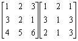

三階矩陣乘法(II)
這個程式可以計算一個 3 × 3 整數矩陣及另一個 3 × n 整數矩陣的乘積，其中 n 是正整數。 雖然程式較第(I)版長，但程式只使用一個程式位置，因此可以多出一個程式位置寫其它程式。
程式編寫日期: 2007年2月10日
程式(133步)
| 1 | X←→Y | 2. | Kin × 1 | 3. | Kin × 2 | 4. | Kin × 3 | 5. | Kin × 6 |
| 6. | AC | 7. | Kout 1 | 8. | × | 9. | ENT | 10. | Kin + 1 |
| 11. | + | 12. | Kout 2 | 13. | × | 14. | ENT | 15. | Kin + 2 |
| 16. | + | 17. | Kout 3 | 18. | × | 19. | ENT | 20. | Kin + 3 |
| 21. | = | 22. | × | 23. | 5 | 24. | 10x | 25. | = |
| 26. | HLT | 27. | + | 28. | ( | 29. | ( | 30. | ( |
| 31. | Kout 1 | 32. | FIX 0 | 33. | RND | 34. | × | 35. | ( |
| 36. | Kout 4 | 37. | - | 38. | RND | 39. | ) | 40. | + |
| 41. | Kout 2 | 42. | RND | 43. | × | 44. | ( | 45. | Kout 5 |
| 46. | - | 47. | RND | 48. | ) | 49. | + | 50. | Kout 3 |
| 51. | RND | 52. | × | 53. | ( | 54. | MR | 55. | - |
| 56. | RND | 57. | NORM | 58. | ) | 59. | ) | 60 | × |
| 61. | 5 | 62. | 10x | 63. | ) | 64. | HLT | 65. | + |
| 66. | ( | 67. | ( | 68. | Kout 6 | 69. | × | 70. | Kout 1 |
| 71. | FIX 0 | 72. | RND | 73. | × | 74. | Kin - 1 | 75. | Kout 4 |
| 76. | RND | 77 | + | 78. | Kout 6 | 79. | × | 80. | Kout 2 |
| 81. | RND | 82. | × | 83. | Kin - 2 | 84. | Kout 5 | 85. | RND |
| 86. | + | 87. | Kout 6 | 88. | × | 89. | Kout 3 | 90. | RND |
| 91. | × | 92. | Kin - 3 | 93. | MR | 94. | RND | 95. | NORM |
| 96. | ) | 97. | HLT | 98. | + | 99. | ( | 100. | 1 |
| 101. | X←→Y | 102. | 1 | 103. | X←→K6 | 104. | x > 0 | 105. | ) |
| 106. | ) | 107. | Min | 108. | 0 | 109. | ) | 110. | Kin 5 |
| 111. | 0 | 112. | = | 113. | Kin 4 | 114. | MR | 115. | ÷ |
| 116. | 5 | 117. | 10x | 118. | Kin ÷ 1 | 119. | Kin ÷ 2 | 120. | Kin ÷ 3 |
| 121. | Kin ÷ 4 | 122. | Kin ÷ 5 | 123. | = | 124. | Min | 125. | ENT |
| 126. | Kin + 4 | 127. | ENT | 128. | Kin + 5 | 129. | ENT | 130. | M+ |
| 131. | 1 | 132. | X←→Y | 133. | RTN | 134. | 135. |
注意程式的限制: 輸入的數據絶對值必須小於50000的整數。
註: 輸入第一個矩陣第二行時沒有ENT的細字。
例題: 計算下列矩陣的乘積:

假設程式第一部份及第二部份分別儲存於P1及P2
按 P1 1 RUN 2 RUN 3 RUN 3 RUN 2 RUN 1 RUN 4 RUN 5 RUN 6 RUN
(輸入第一個矩陣，由左至右，上至下輸入)
再按 1 RUN 3 RUN 2 RUN (輸入第二個矩陣，第一欄的數據，顯示13)
RUN (顯示11) RUN (顯示31，這三個數值為答案的第一欄)
再按 2 RUN 1 RUN 1 RUN (輸入第二個矩陣，第二欄的數據，顯示7)
RUN (顯示9) RUN (顯示19，這三個數值為答案的第二欄)
再按 1 RUN 3 RUN 3 RUN (輸入第二個矩陣，第三欄的數據，顯示16)
RUN (顯示12) RUN (顯示37，這三個數值為答案的第三欄)
所以: